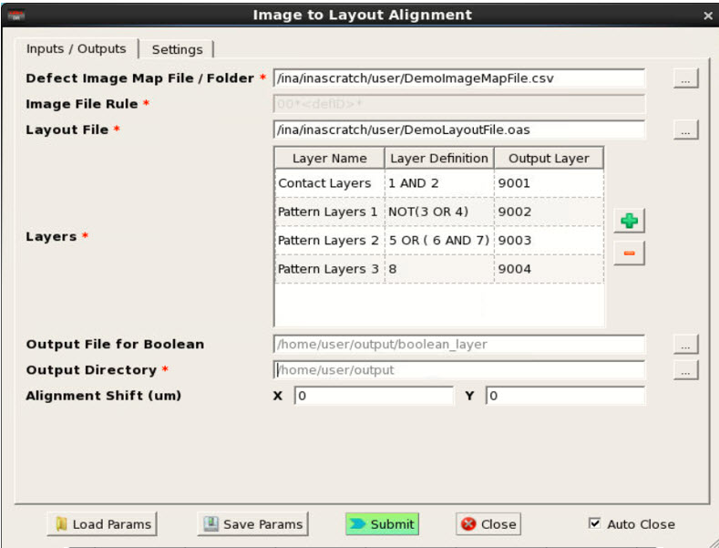
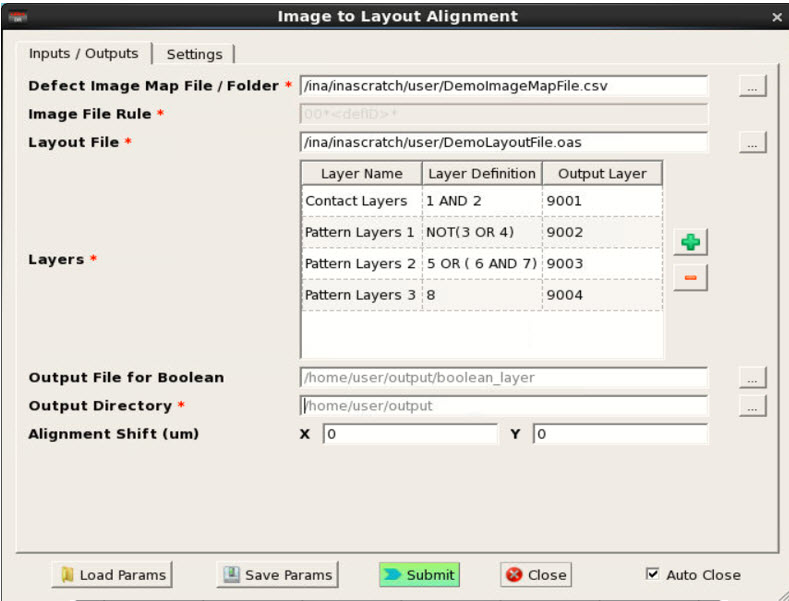

Image-to-Layout Alignment Workflow
The Calibre DefectClassify uses a simple
workflow to perform an analysis of defects detected on the wafer.
Prerequisites
Calibre DefectReview must be installed and invoked.
Calibre DefectClassify must follow the prerequisites as described in “Calibre DefectClassify Prerequisites”.
Procedure
- In
Calibre DefectReview, click ,
or click the Image to Layout Alignment icon
 at the top of the Calibre DefectReview window. The Image to Layout
Alignment dialog box appears.Figure 1. Image to Alignment Dialog Box
at the top of the Calibre DefectReview window. The Image to Layout
Alignment dialog box appears.Figure 1. Image to Alignment Dialog Box